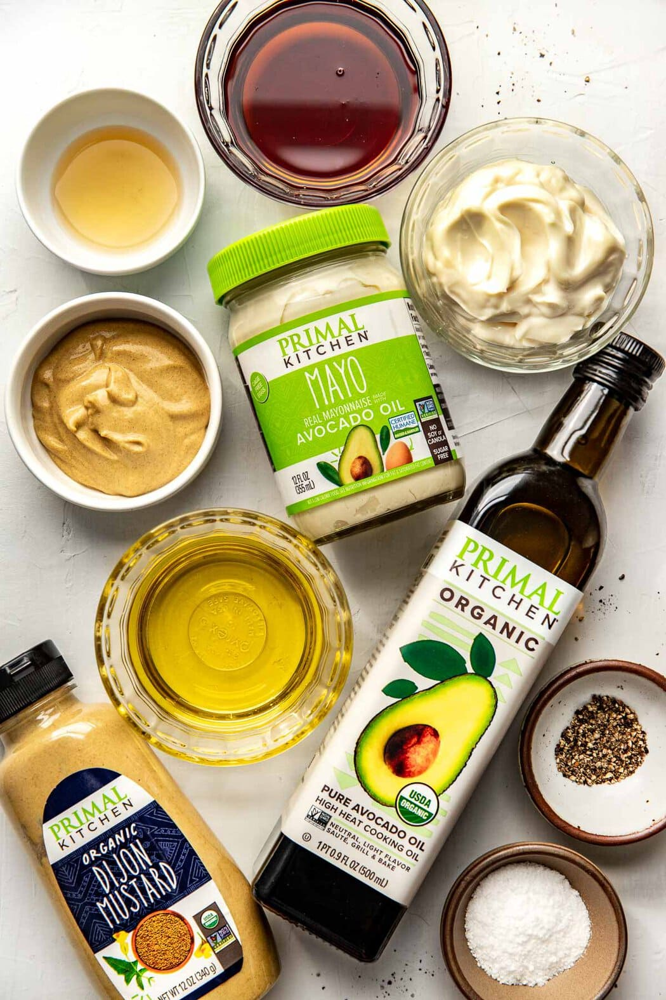
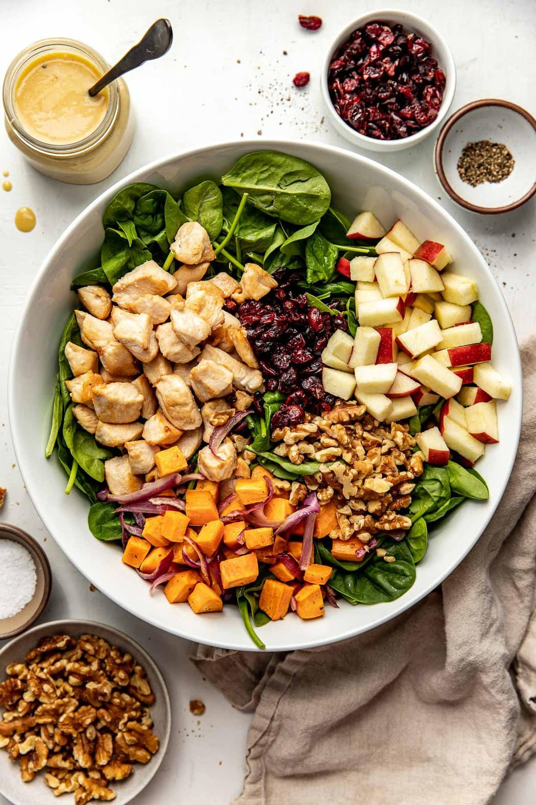
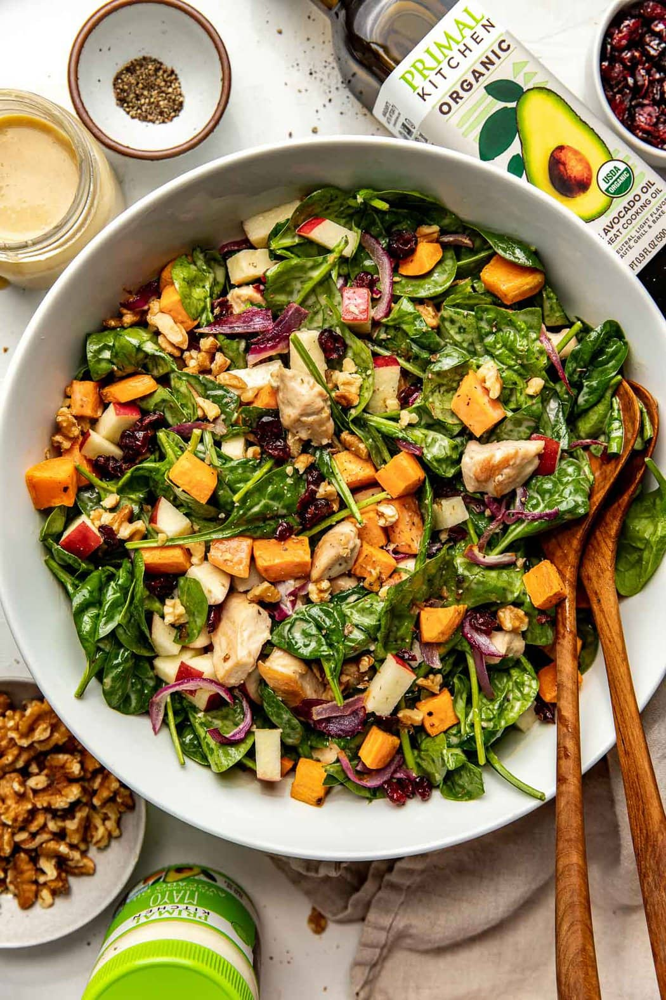

Ingredients
For the Creamy Maple Dijon Dressing
Directions
- Preheat the oven to 375°F.
- To a baking sheet add the diced sweet potato and red onion. Drizzle with 1 teaspoon avocado oil, salt and pepper. Toss to evenly coat, spread out evenly on pan and bake for 15-18 minutes.
- While sweet potatoes are baking, place a skillet over medium-high heat. Add remaining 1 teaspoon avocado oil, swirl to coat the bottom of the skillet, then add the cubed chicken. Cook for 3-4 minutes on each side or until the internal temperature reaches 165°F. Remove from heat and set aside.
- In a small jar or bowl add all dressing ingredients, whisking until well combined. Set aside.
- In a large mixing bowl, add the fresh spinach, dried cranberries, diced apple and chopped walnuts.
- Remove the baking sheet from the oven, allow to cool for 5-10 minutes.
- Add the cooked chicken to the mixing bowl, add the roasted sweet potatoes and onions to the mixing bowl. Drizzle the dressing over top and toss gently to evenly coat all ingredients.
- Serve immediately. Store leftovers in an airtight container in the fridge for up to 3 days.